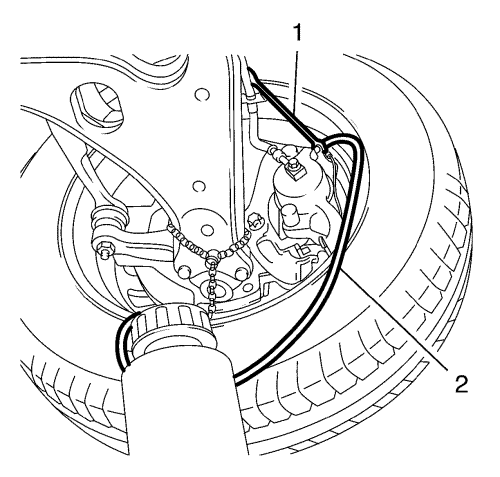

Purga de aire del sistema de frenos hidráulicos
Advertencia: Consulte Advertencia de líquido de frenos irritante en la sección Prólogo
Advertencia: Consulte Advertencia de líquido de frenos DOT 4 en la sección Prólogo
Precaución: Consulte Advertencia sobre los efectos del líquido de frenos sobre la pintura y los componentes eléctricos en la sección Prólogo
Atención: Al añadir líquido al depósito de líquido de frenos o de líquido del embrague, utilice sólo líquido de frenos DOT-4+ de un envase nuevo sin abrir. Este líquido de frenos poliglicólico es higroscópico y absorbe la humedad. No utilice líquido de un recipiente abierto que pueda estar contaminado con agua. El líquido inadecuado o contaminado podría dañar los componentes del sistema.
Utilice el líquido de frenos recomendado por GM o líquido de frenos DOT-4+ equivalente. Consultar Adhesivos, líquidos, lubricantes y selladores .
- Coloque un trapo limpio debajo del cilindro de freno maestro para impedir que se derrame líquido de frenos.
- Con el encendido en OFF y los frenos fríos, presione los frenos 3-5 veces, o hasta que el esfuerzo sobre el pedal aumente notablemente para reducir la reserva del servofreno.
- Desmonte la tapa del depósito del cilindro maestro de freno

- Monte un adaptador usual de purga de frenos (1) al depósito del cilindro maestro de freno.
Nota: Siga las instrucciones de los fabricantes.
- Conecte el purgador usual de presión de frenos (2) al adaptador de purga de presión de frenos (1).
- Cargue el sistema de frenos hidráulicos hasta 2 -2,5 bares.
- Secuencia de purga de las válvulas de purga:
| 7.1. | Válvula de purga trasera derecha. |
| 7.2. | Válvula de purga trasera izquierda. |
| 7.3. | Válvula de purga delantera derecha. |
| 7.4. | Válvula de purga izquierda derecha. |
- Purgue el sistema de frenos hidráulicos de acuerdo con la secuencia de purga anterior.

- Conecte el tubo flexible transparente (2) a la válvula de purga correspondiente.
- Abra la válvula de purga con una llave para tuberías rígidas de freno adecuada (1) y deje fluir el líquido de frenos hasta que éste salga claro y sin burbujas.
- Cierre las válvulas de purga correspondientes. Consultar Especificaciones de componentes de frenos .
- Compruebe que el sistema de frenos no presenta fugas externas. Consultar Revisión de fugas externas del sistema de frenos .
| © Copyright Chevrolet. All rights reserved |